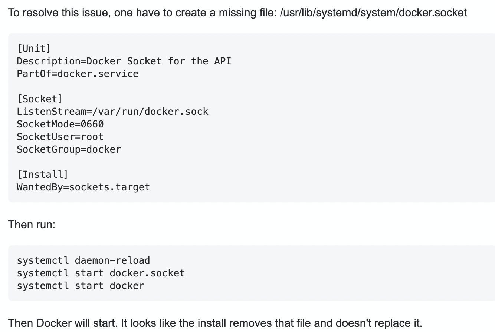

Docker学习笔记——环境配置
安装
使用yum方式安装，但是首先要保证有centos的yum源，然后yum install docker-ce
1 | # 安装centos的yum源 |
启动
1 | # 安装完之后启动docker |
踩坑1：启动docker的时候失败，sudo dockerd --debug查找原因
原因是没有network，解决方法:
1 | sudo ip link add name docker0 type bridge |
踩坑2：需要重启docker，找不到socket，更改了本机lib里的docker.socket，参考这个图中的方法.

路径配置
系统默认会把docker的镜像放在/var/lib/docker的目录下，有时候这个目录的磁盘空间往往不会很大，当docker镜像比较多的时候，会导致磁盘空间不足，一个解决办法是将docker路径重定向到自己家目录下的本地空间，操作方式如下：
1 | systemctl stop docker |
sudo权限
docker使用unix socket进行通讯，但是unix socket属于root用户，但是普通用户需要使用sudo才能开启root权限，但是普通的操作并没有root权限。可通过以下操作使docker拥有sudo权限.
1 | sudo groupadd docker |
如果是虚拟机，则需要reboot机器才能生效
如果无法reboot，那通过newgrp docker，使之在当前目录生效
开启了sudo权限之后，可以通过vscode远程访问docker容器